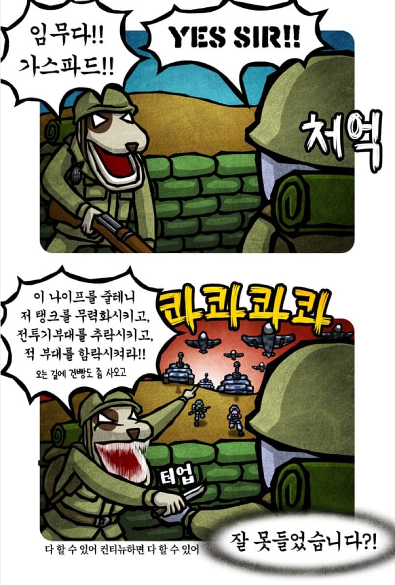

콜 오브 듀티: 모던 워페어 4 (2026) 요약
댓글
사실 초짜가 전쟁터에 떨궈져서 전설이 되는 플롯이 콜옵전통이라
여기까지가 템플릿이거든
ㅋㅋㅋㅋㅋㅋㅋ 나는 솔직히 콜옵에서 해병대 이병이 선임이랑 편하게 대화하는게 너무 어색해보였음
다음 작에 박현준 중사로 나오는 거 까지가 서사임
??? : 디미트리! 안돼!
중사(최소 중령 까지는 밑으로 봄.)
박현준! 기총으로 적들을 쓸어버려라!
이병이 동에번쩍 서에번쩍 하는데
다른 특수부대 애들은 햄버거 먹는지 안 보임
게임 시작하자마자 '다른 부대원들이 모든 목표를 완수했습니다' 하면서 스탭롤 올라가면 슬프니까...
인간 전술병기 박현준이 있는데 특수부대 따위를 왜 써ㅋㅋ
이병 한명이서 정은이 모가지를 딸 수 있는데
특수부대까지 쓰면 제네바조약 위반임
그래서 블랙베레 칼이 같이 다니잖아
진짜 먹고 있어서 그럼
해보자고 이 씨빠새끼들…!!
아직안봤는데 우리나라 에이전트들이 나가기전 미 상황정리햏다는거지?
파크라이식 흐름 ㅋㅋ
고작 이등병 짬찌한테 바라는거 존나 많더라
콜옵 시리즈에서 병사로 플레이하는거야 좀 있긴 한데, 병사가 이정도로 주인공인거는 처음 아닌가"?
리마스터 전 모던2만해도 라미레즈 '이병'이 러시아군 무쌍찍어서..
김정은 목따는데 이병보내는 미친군대
박현준 = 둠슬레이어 급 되는거냐?
메달오브아너 식 진행 ㅋㅋ
모던4뿐 아니라 역대 콜오브듀티 다그랬음ㅋㅋ
박현준!RPG쏴!박현준!박격포잡아!박현준!BMP잡아!
주인공이 상병이나 부사관 하사~중사 쯤이었으면
더 나았을거 같긴함